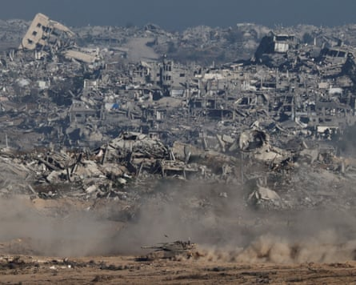

Donald Trump will host Benjamin Netanyahu in Washington DC on Monday as the US president seeks again to broker a peace deal in Gaza and the Israeli prime minister takes a victory lap through the Oval Office after a joint military campaign against Iran and a series of successful strikes against Tehran and its proxies in the Middle East.
Netanyahu and Trump have a complex personal relationship – and Trump openly vented frustration at him last month during efforts to negotiate a truce with Iran – but the two have appeared in lockstep since the US launched a bombing run against Iran’s nuclear programme, fulfilling a key goal for Israeli war planners.
Netanyahu arrives in Washington in a strong political position, observers have said, potentially giving him the diplomatic cover he would need to end the war in Gaza without facing a revolt from his rightwing supporters that could lead to the collapse of his government.
Hamas this week responded “positively” to a 60-day Israeli ceasefire proposal. But its negotiators have sought for Israel to guarantee a permanent end to the war and to manage the distribution of aid in Gaza through the UN, rather than the US and Israeli-backed Gaza Humanitarian Foundation, which has had a tumultuous rollout marred by near-daily incidents of Israeli soldiers opening fire on civilians gathering near its distribution sites, killing hundreds of people.
Israel has said the proposed changes to a ceasefire proposal are unacceptable, but Netanyahu has said he will nonetheless send negotiators to Qatar for indirect talks with Hamas. Before boarding his flight to the US on Sunday, Netanyahu said Israel had an opportunity “to expand the circle of peace far beyond what we could have imagined”.
Netanyahu also said Israeli negotiators heading to ceasefire talks in Qatar had clear instructions to achieve a ceasefire agreement under conditions Israel had accepted, Reuters reported, and added that Trump could help achieve those goals.
“We have already transformed the Middle East beyond recognition, and we now have a chance to bring a great future to the people of Israel and the Middle East,” he said.
Those will be the first talks in six weeks and Trump has told reporters he is very optimistic about the potential for a ceasefire. “There could be a Gaza deal next week,” Trump told reporters onboard Air Force One on Friday.
Before the meetings, Netanyahu’s top strategic adviser, Ron Dermer, huddled with the US vice-president, JD Vance, the secretary of state, Marco Rubio, and the US envoy to the Middle East, Steve Witkoff, for consultations in Washington. During those meetings, the Guardian has been told, the two sides discussed postwar conditions that would allow Israel to banish Hamas from the Gaza Strip and task the international community with responsibility for its rebuilding.
“We have no interest to stay in Gaza,” Israel’s ambassador to the UN, Danny Damon, said in response to a question from the Guardian. “I think we will make sure that in terms of security, we have the ability to act in Gaza, very similar to what’s happening today in Judea and Samaria,” territories known internationally as the occupied West Bank.
Hamas has pushed for guarantees from the US that Israel will end the war permanently. Damon, however, said an initial 60-day ceasefire was “not a commitment for ending the war”, and that further discussions on a permanent ceasefire would take place in that period.
“We’re going to have to think about the mechanism which will allow Israel to declare that the war is over, will allow international organisations and other players to step in and we make sure that Hamas is not there,” he said.
The US and Israel have discussed tasking the international community with responsibility for rebuilding Gaza, the Guardian has been told.Photograph: Amir Cohen/Reuters
US and Israeli officials have said they believe the military campaign in Gaza – which has killed more than 57,000 Palestinians, mostly civilians – has allowed Netanyahu to effectively dictate terms to Hamas and that the group has very little leverage in negotiations.
The latest version of the deal would have Hamas release 28 Israeli hostages – 10 alive and 18 bodies – over the course of the 60-day ceasefire. The UN and Palestine Red Crescent Society would be given additional licence to expand aid operations in Gaza. The Israeli army would withdraw first from parts of northern Gaza, and one week later would pull out from parts of the south.
The deal would leave approximately 22 hostages, 10 of them alive, still held in Gaza.
Netanyahu has boasted that his expected meetings in Washington with Trump and other senior officials, including Vance, the secretary of defence, Pete Hegseth, and Rubio, were in part achieved by Israel’s readiness to confront Iran.
“These come in the wake of the great victory that we achieved,” Netanyahu said in remarks to the Israeli government. “Taking advantage of the success is no less an important part of achieving the success.”
A key question is whether Trump’s patience with Netanyahu will last. He has at times been frustrated with the slow pace of negotiations over the Gaza ceasefire. “MAKE THE DEAL IN GAZA. GET THE HOSTAGES BACK!!! DJT,” he wrote on social media a week ago.
And as he sought to broker a ceasefire between Israel and Iran last week, he had what looked like a minor meltdown as he complained on the White House lawn: “[Iran] violated [the ceasefire] but Israel violated it, too ... I’m not happy with Israel,” he said. “We basically have two countries that have been fighting so long and so hard that they don’t know what the fuck they’re doing.”
As Netanyahu comes to Washington on Monday for the third time since Trump’s inauguration, he appears to know exactly what he is doing. And while Trump has touted his bona fides as a dealmaker, the decision for when and how a ceasefire is implemented in Gaza appears ultimately out of his hands.